Design · Build · Test
Portfolio
Compliant mechanisms, custom actuation, computational design, and hands-on robotics. Explore the decisions, prototypes, and testing behind each project.
Notable projects
Undergraduate thesis
A surrogate-assisted framework for the subject-specific scalable design of compliant prosthetic wrists
Published in Scientific ReportsDeveloped a two-DoF compliant wrist and an automated design workflow to optimize geometry for user size, motion, and stiffness targets.
Explore the project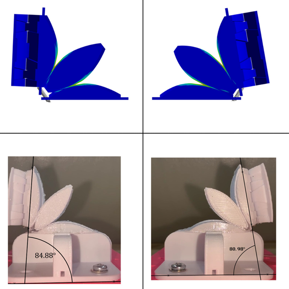


Self-funded personal project
Custom BLDC–Cycloidal Actuators & Teleoperated Robotic Arm
Custom BLDC–cycloidal actuators, a wearable controller, and a teleoperated arm with five arm DoF and two wrist DoF.
Explore the project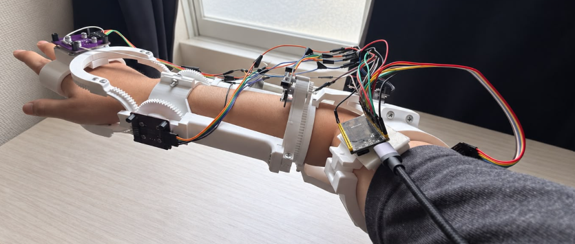
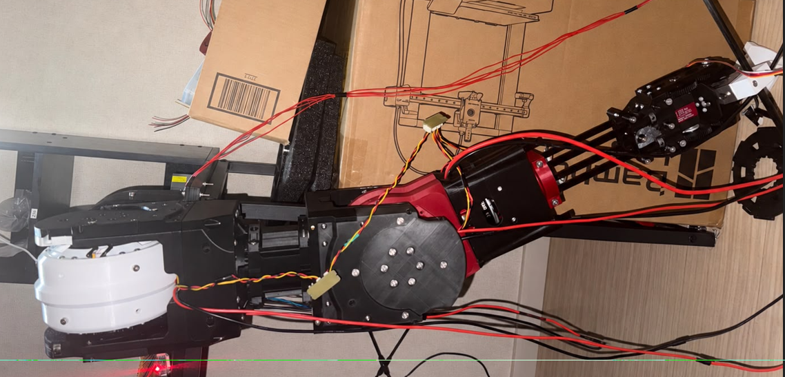

Self-funded personal project
Computational Optimization of a Beltless Gear CVT
Designed and prototyped a gear-based continuously variable transmission, using computational optimization to refine the mechanism.
Explore the project

Self-funded personal project
Tendon-Driven Continuum Robot
Built a continuum robot with alternating compliant joints and six pulling tendons for bending in two perpendicular planes.
Explore the project

Self-funded personal project
Tendon-Driven Compliant Robotic Hand
Built a 15-DoF robotic hand combining compliant finger joints with tendon-driven actuation.
Explore the project

More projects
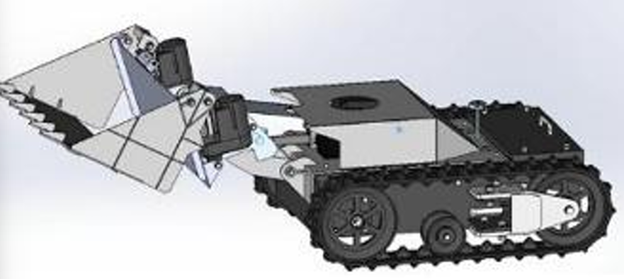
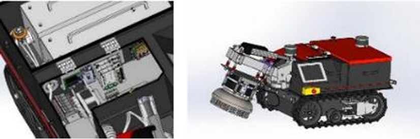
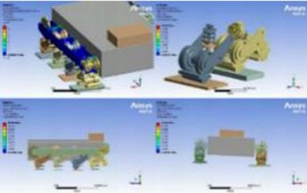
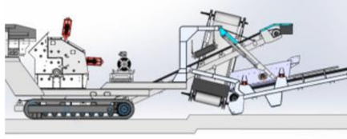
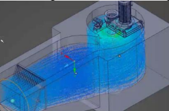
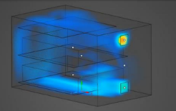
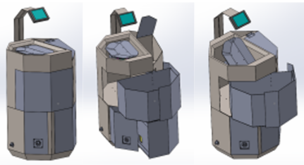
6 projects
Internship / Contract projects
Mechanical design and simulation contributions to company and startup projects.
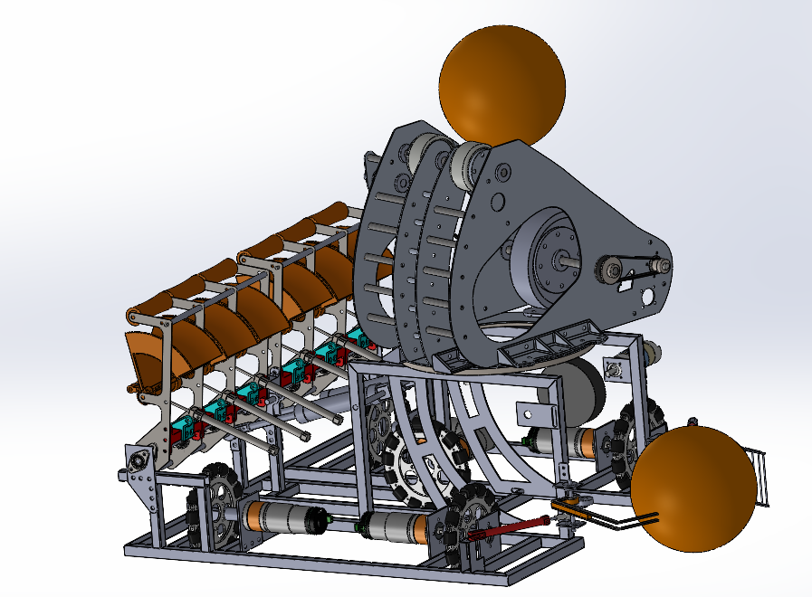
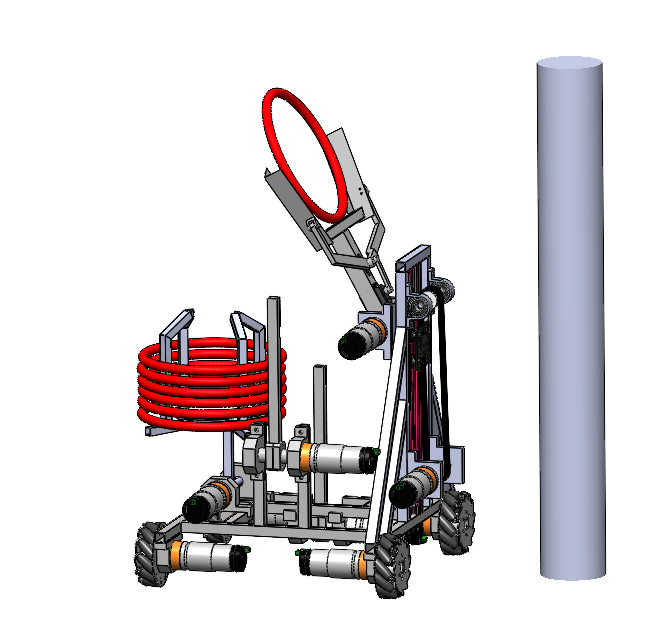
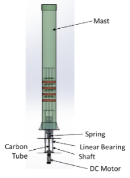
2 projects
Competition projects
Mechanical design, integration, and teamwork through robotics and energy projects.

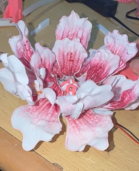
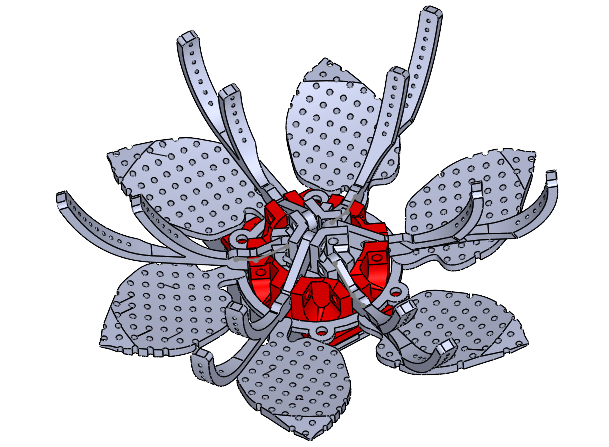
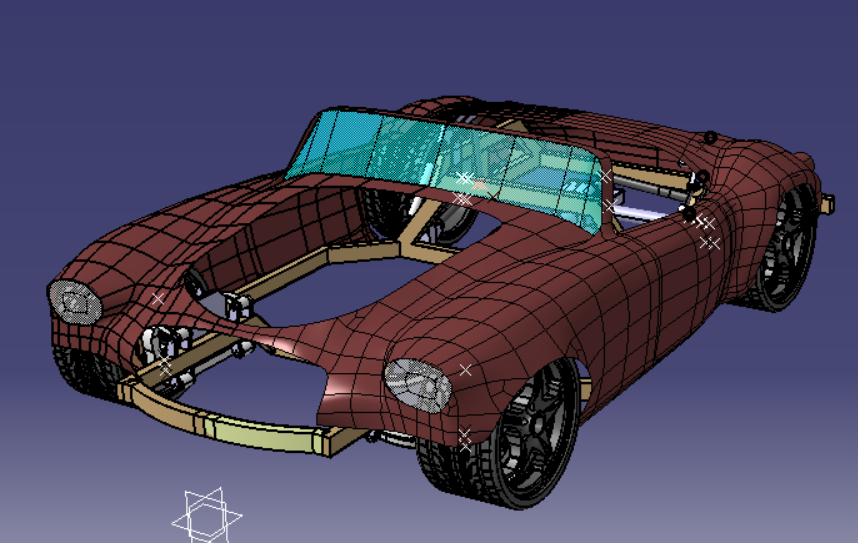
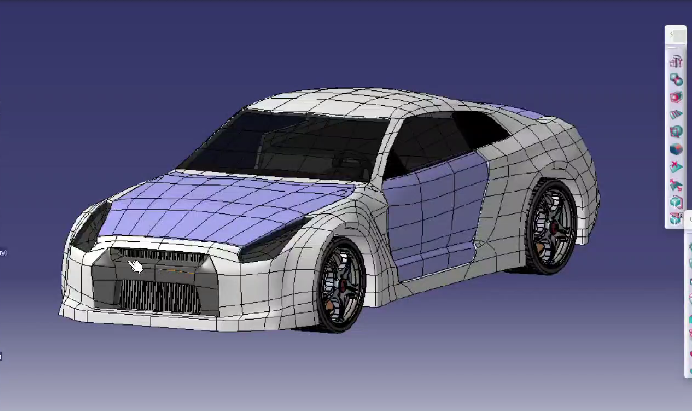


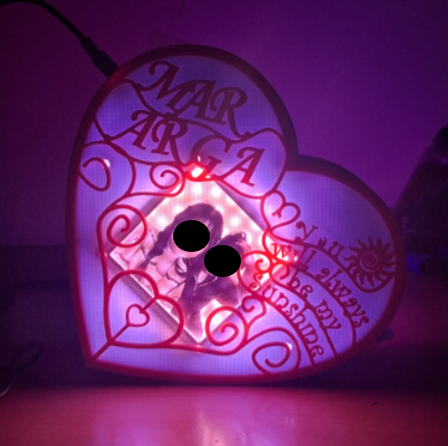
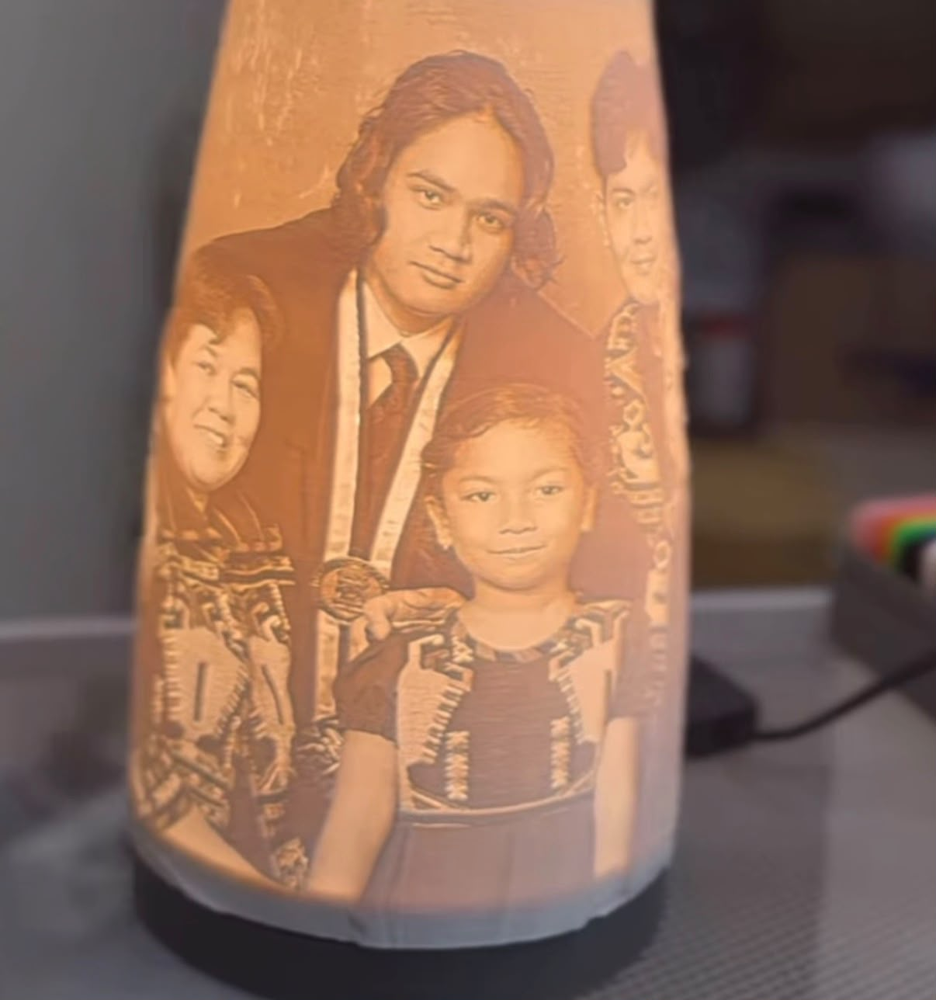
3 projects
Additional / Fun projects
Explored art projects, free-form CAD modeling, and machine-learning-assisted mechanism design through personal projects.